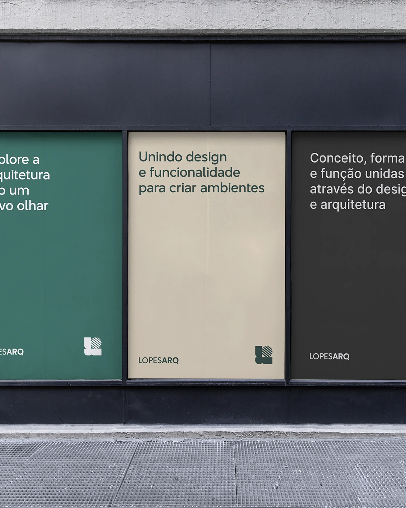
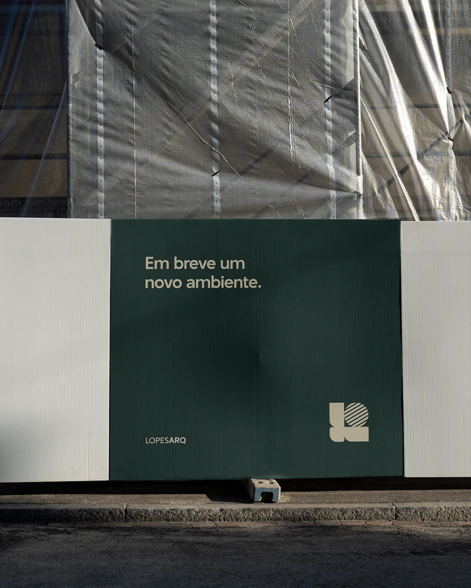
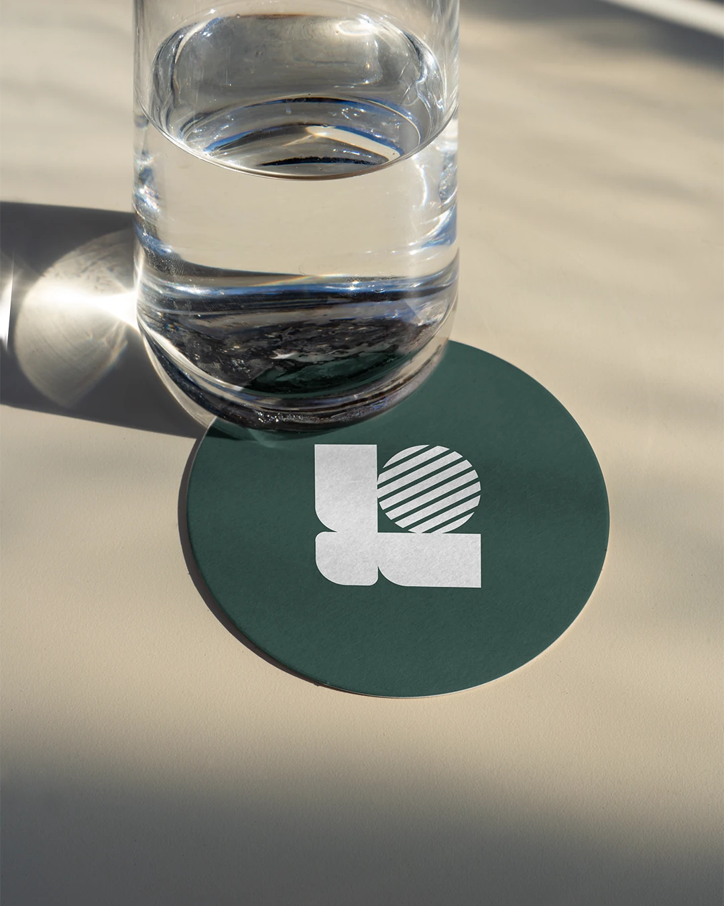
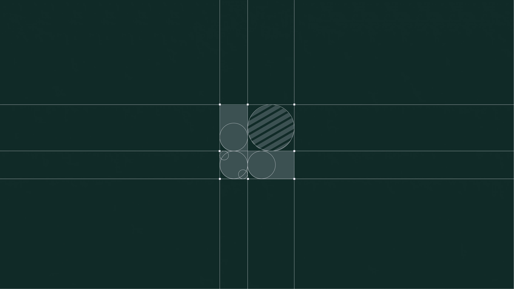
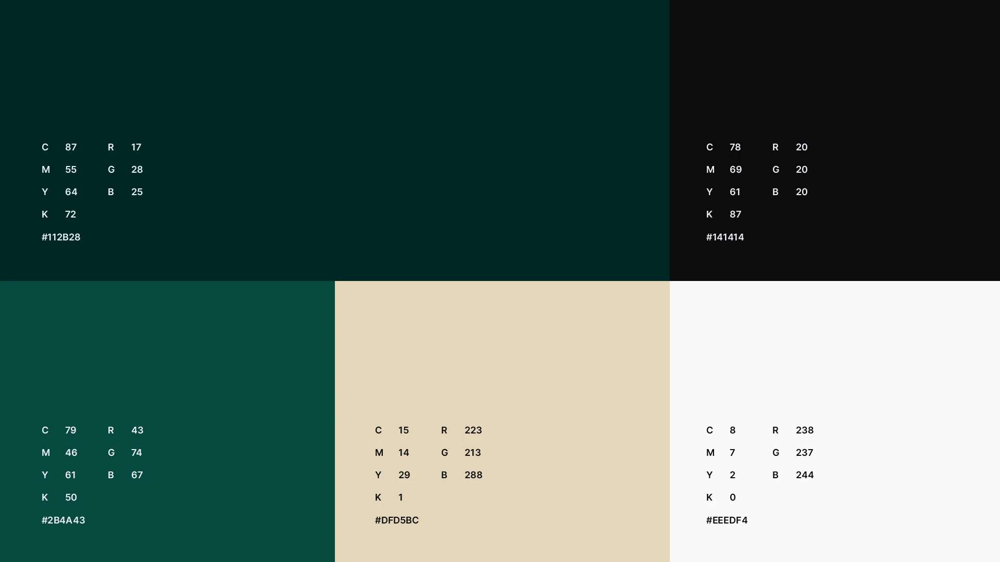
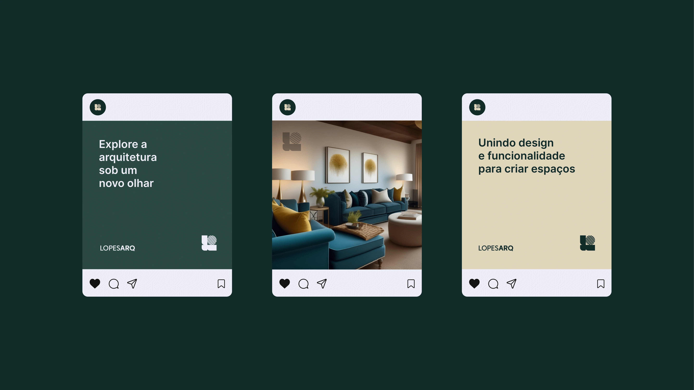
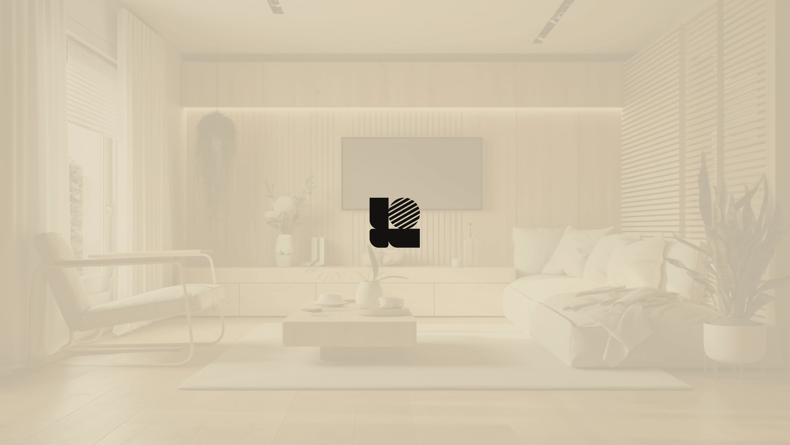

Lopes ARQ
- Cliente
- Lopes ARQ
- Serviços
- Identidade Visual, Landing Page
- Segmento
- Arquitetura, Interiores
Sobre o projeto
“LOPESARQ” é um estúdio de arquitetura que transforma a relação entre solidez, funcionalidade e beleza em espaços contemporâneos. Sua identidade visual traduz esses princípios em uma marca clara, geométrica e atemporal.

Solução
O projeto parte da Tríade Vitruviana — Firmitas, Utilitas e Venustas — e de referências da Bauhaus para conectar a identidade ao universo da arquitetura.
Símbolo
O símbolo nasce do desenho de “Lo”: o “O” vazado cria uma estrutura geométrica, enquanto os recortes inspirados em molduras clássicas acrescentam caráter ao “L”. A composição reúne três ideias centrais:
- Solidez e estrutura
- Equilíbrio entre forma e função
- Elegância com intenção
Sistema Visual
A geometria se desdobra em composições e elementos gráficos que mantêm a identidade reconhecível em diferentes aplicações, de materiais digitais a impressos.






